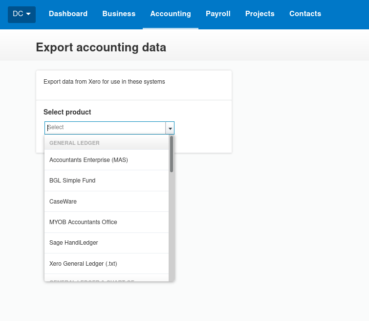

Export Your Xero Transactions to Use in any ERP
In this blog post, I described the process of moving accounting systems. One of the important tasks is bringing over comparable balances. In your new accounting system, you will want to be able to view historical data, not just look at new data entered since go-live.
Typically, a limited number of year end balances will be brought in. However, you can do better than that. In one migration, we prepared month end balances for several legal entites going back seven years. In another migration, we prepared month end balances for one legal entity for four years.
Whilst this process would be hard and error prone if you were manipulating spreadsheets, it is pretty simple to do with Python. Most accounting systems have a way of exporting transaction data, whilst this would be too much detail, we have usually prepared month end balances so that there is something to compare.
In Xero, going to Export Accounting Data within the Advanced Accounting menu (link) will give you a choice of formats to export. All of these are plain text, so will open in any text editor. Generally, I choose Xero General Ledger (.txt) as the format, as it seems to be the simplest, contain the most data, and be free of software specific quirks.

Reading this file in Python is super easy.
xero_export = 'DemoCompany(UK)_XERO_GL_2022_APR_27.txt'
with open(xero_export, 'r') as input_file:
csv_reader = csv.reader(input_file, delimeter='\t')
next(csv_reader)
for row in csv_reader:
# do stuff to the rows
Once the data has been exported, it can then be arranged into a format to suit Netsuite, Dynamics, or even Sage50. The general process is that the script will aggregate the value of each nominal code for each month end. Once the files have been read, you will end up with a JSON object that looks something like:
{
month_end_0: {
sales_nominal: -500,
expense_nominal: 200,
assets_nominal: 1000,
liabilities_nominal: -600,
captial_nominal: -100
},
month_end_1: {
sales_nominal: -700,
expense_nominal: 350,
assets_nominal: 1200,
liabilities_nominal: -750,
captial_nominal: -100
}
}
After that, you can loop through the object and create your csv to import the balances. I will cover the details in another post.